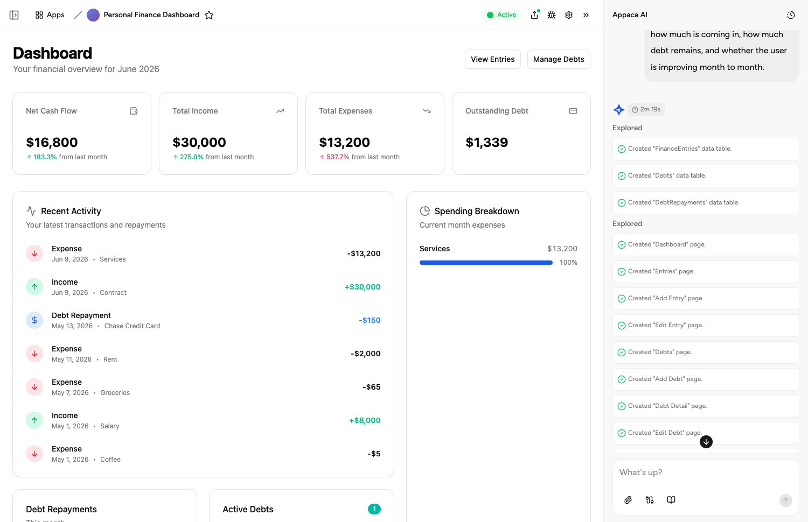

THE FRONT PAGE
EDITOR'S NOTE: A busy day in the latent space. #Judgment and craft
BREAKING VECTORS
The Quiet Migration Away From OpenClaw
As teams quietly abandon OpenClaw, the migration exposes the fragility of relying on brittle, hype-driven abstractions over foundational software craft. The risk shifts from technical debt to the sheer friction of untangling dependencies that never quite delivered on their architectural promises.
Java’s Long-Awaited Memory Overhaul Reaches JDK 28
Project Valhalla finally delivers value types and generic specialization to the Java Virtual Machine, offering a massive performance boost by flattening data structures. However, this deep architectural shift risks introducing subtle backward-compatibility bugs into millions of lines of legacy enterprise code.
MODEL ARCHITECTURES
NEURAL HORIZONS
LAB OUTPUTS

Datasette Adds Native HTML App Hosting to Skip the Frontend Pipeline
By allowing raw HTML and JavaScript applications to live directly inside the database instance, the update bypasses modern build-tool bloat but introduces a fragile coupling between data storage and presentation layers.
Crawlie attempts to bridge SEO audits for both human eyes and machine scrapers
The open-source tool points to a shift where websites must now design text architecture for LLM agents as much as traditional search crawlers. While promising a return to local, clean diagnostics, optimizing simultaneously for two entirely different consumption models risks creating bloated, fragmented metadata strategies.

Appaca Attempts an AI Interface for Operations
The tool merges natural language with basic databases to let non-technical operators build internal workflows, though substituting structured engineering with chat prompts risks creating fragile, unversioned internal dependencies.